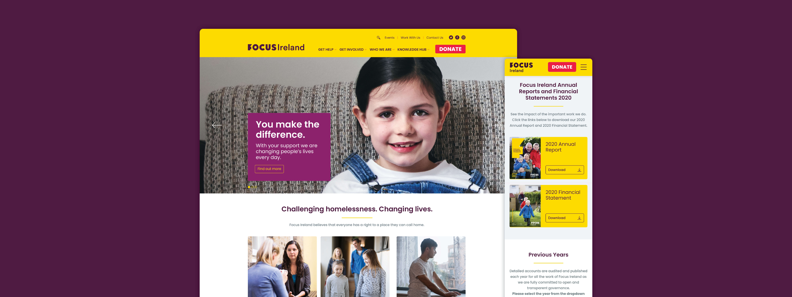

UX DESIGN CASE STUDY
Focus Ireland
INTRODUCTION
Focus Ireland is a nonprofit organisation and one of the country's leading providers of services for people who are homeless and at risk of homelessness in Ireland.
Donations are critical to their work and they needed a new website that could streamline that process, and also position them as the definitive resource for research and advocacy work, to help them ensure that the rights of people who are homeless remains on the political agenda.
PROJECT OVERVIEW
The Challenge
The existing Focus Ireland website was a legacy site – it was old and bloated, and had a history of features and content being tagged on in an ad hoc fashion. What this meant was a confusing site structure that made research and other key information difficult for users to find. I was tasked with making sense of the site structure and improving user flow.
This was the project that really made me want to study UX design even further. At the time that I started working on this, I had some basic UX Training under my belt. However, working on this project showed me the limits of my knowledge and gave me the urge to learn and experience even more.


UNDERSTANDING
Key problems, goals and objectives
Focus Ireland had been using HotJar on their site which meant I had access to a library of screen recordings from real user sessions. Common across a lot of these user sessions was visible hesitancy and confusion – clicking back and forth, and back again to find what they were looking for. But more critically, not completing and abandoning the donation process was evident in a lot of user sessions.
My first step in tackling this challenge was to organise a number of workshops with the team in Focus Ireland to identify who the users of the site were, to try and understand their goals and objectives and why they were feeling unable to achieve these. I also did some site analysis research by reviewing their Google Analytics and getting some quantitative insight into their users' behaviours. Finally, I also carried out some Peer Review / Benchmarking to inform and give further insight to our discussions about how best to resolve the problems that Focus Ireland's website users were encountering.


GATHERING INSIGHTS
Analysing the data and articulating the problems to be solved
One key insight that came out of the Workshops was the idea that users need to validate their decision to donate before completing the transaction. While they do want to see at a glance how simple the process is, they then often want to see some information on how the charity operates, as a way of validating that the work of the charity aligns with their own values.
Focus Ireland also wanted to position themselves as the primary national resource for information on Homelessness research, advocacy and policy updates. A lot of this information was quite difficult to find on the old website, so a better structured site architecture was crucial to ensuring that the website was easy to navigate for all types of users.
Distilling the insights from the Workshops into a series of User Personas created a structured, easy to understand and easy to share format for compiling these insights – and also provided a clear design target. We also went through a number of drafts of the Sitemap before we settled on a structure that felt like it made sense. The key to cracking this was the organising of the content into 4 main categories or pillars – Get Help, Get Involved, Who We Are and Knowledge Hub.


DESIGN & DEVELOPMENT
Bringing insights to life
After gaining a clear understanding of the site's users and their motivations, I was able to proceed to the design stage of the project. What I delivered in the end was a design that aimed to improve the User Experience in a number of key areas:
Site structure and organisation of content – making relevant information easier to locate
Visual cues directing users to the Donation page
Navigation – on both desktop and mobile – to facilitate better user flow
Clearer communication of Focus Ireland's key messaging, mission and values
Clearer communication of what users' donations had enabled Focus Ireland to do
Bringing real-life stories to the fore and clearer communication of the impact of Focus Ireland's work


View how the final website turned out in the video below: